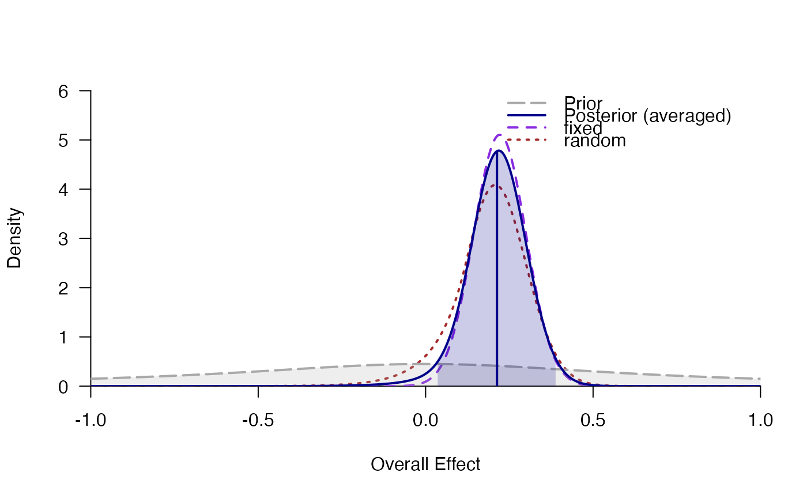
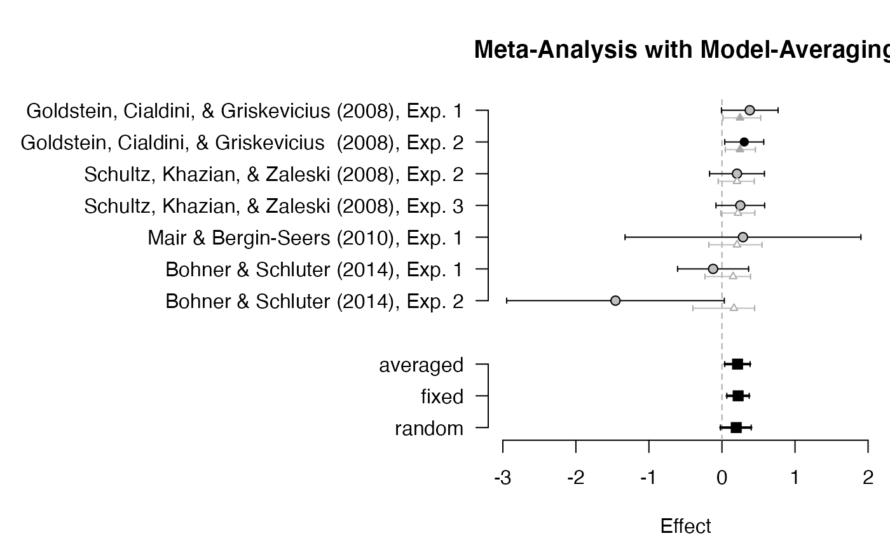

Model averaging for different meta-analysis models (e.g., random-effects or fixed-effects with different priors) based on the posterior model probability.
bma(
meta,
prior = 1,
parameter = "d",
summarize = "integrate",
ci = 0.95,
rel.tol = .Machine$double.eps^0.5
)list of meta-analysis models (fitted via
meta_random or meta_fixed)
prior probabilities over models (possibly unnormalized). For instance, if the first model is as likely as models 2, 3 and 4 together: prior = c(3,1,1,1). The default is a discrete uniform distribution over models.
either the mean effect "d" or the heterogeneity "tau"
(i.e., the across-study standard deviation of population effect sizes).
how to estimate parameter summaries (mean, median, SD,
etc.): Either by numerical integration (summarize = "integrate") or
based on MCMC/Stan samples (summarize = "stan").
probability for the credibility/highest-density intervals.
relative tolerance used for numerical integration using
integrate. Use rel.tol=.Machine$double.eps for
maximal precision (however, this might be slow).
# \donttest{
# model averaging for fixed and random effects
data(towels)
fixed <- meta_fixed(logOR, SE, study, towels)
random <- meta_random(logOR, SE, study, towels)
averaged <- bma(list("fixed" = fixed, "random" = random))
averaged
#> ### Meta-Analysis with Bayesian Model Averaging ###
#> Fixed H0: d = 0
#> Fixed H1: d ~ 't' (location=0, scale=0.707, nu=1) with support on the interval [-Inf,Inf].
#> Random H0: d = 0,
#> tau ~ 'invgamma' (shape=1, scale=0.15) with support on the interval [0,Inf].
#> Random H1: d ~ 't' (location=0, scale=0.707, nu=1) with support on the interval [-Inf,Inf].
#> tau ~ 'invgamma' (shape=1, scale=0.15) with support on the interval [0,Inf].
#>
#> # Bayes factors:
#> (denominator)
#> (numerator) fixed_H0 fixed_H1 random_H0 random_H1
#> fixed_H0 1.00 0.203 0.372 0.462
#> fixed_H1 4.92 1.000 1.830 2.277
#> random_H0 2.69 0.546 1.000 1.244
#> random_H1 2.16 0.439 0.804 1.000
#>
#> # Model posterior probabilities:
#> prior posterior logml
#> fixed_H0 0.25 0.0928 -5.58
#> fixed_H1 0.25 0.4569 -3.98
#> random_H0 0.25 0.2496 -4.59
#> random_H1 0.25 0.2007 -4.81
#>
#> # Posterior summary statistics of average effect size:
#> mean sd 2.5% 50% 97.5% hpd95_lower hpd95_upper n_eff Rhat
#> averaged 0.214 0.089 0.033 0.216 0.380 0.039 0.385 NA NA
#> fixed 0.221 0.078 0.068 0.221 0.375 0.066 0.373 NA NA
#> random 0.196 0.108 -0.035 0.199 0.392 -0.021 0.401 5323.6 1
plot_posterior(averaged)

plot_forest(averaged, mar = c(4.5, 20, 4, .3))

# }